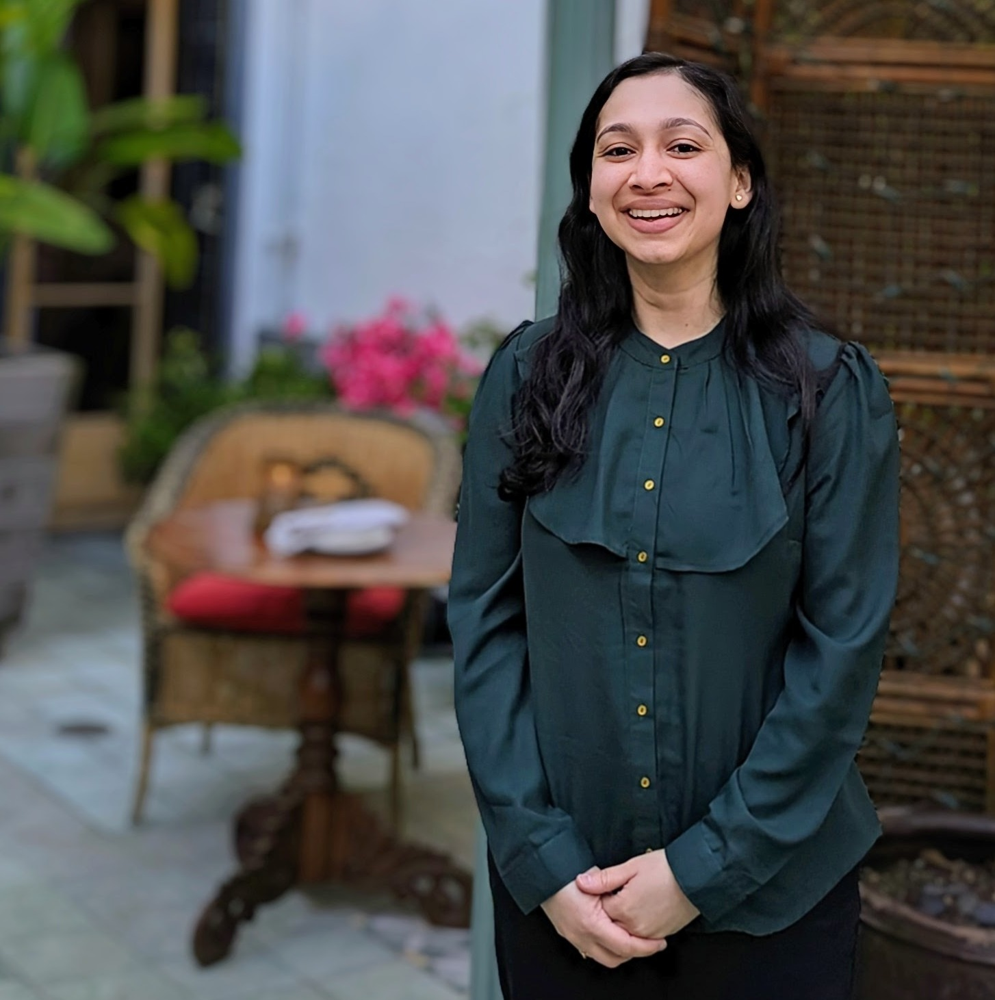
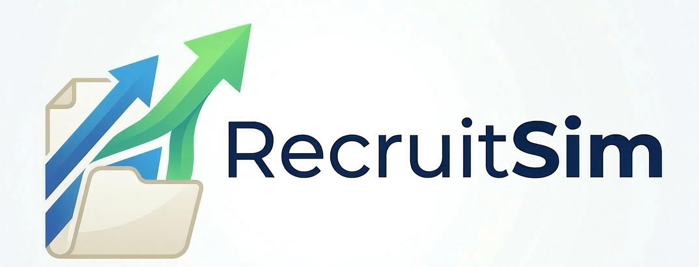
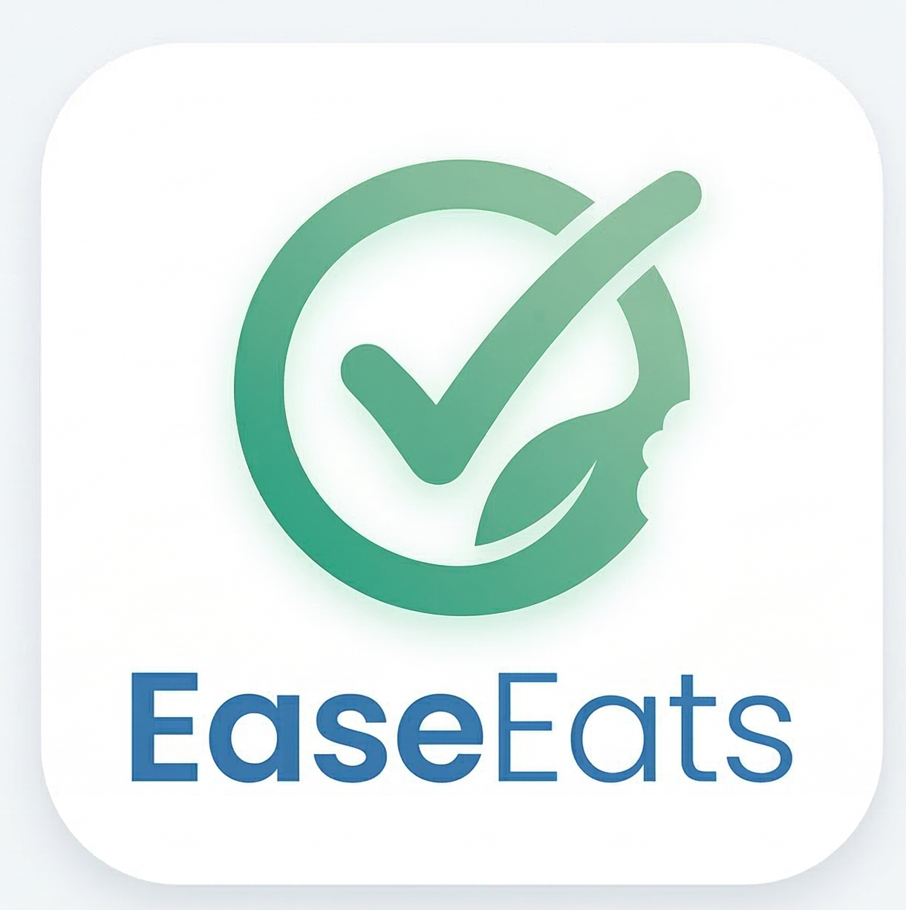

1st Place
Climate & Health Hackathon
AI-powered health companion for extreme weather events
See moreHello! I'm
Applying 7+ years of clinical data science product leadership to build human-centric products. Cornell Tech MBA focusing on Systems Design and Product Strategy

Tech MBA candidate at Cornell University, with a professional foundation spanning banking fraud analysis (1.5 years) and clinical data science product leadership at Roche (7.5 years).
From banking fraud to clinical trials, I've learned to lean into details to understand how systems truly function. My work focuses on systems diagnosis and strategic design — understanding where processes break and how they can be rebuilt.
Now, I'm pivoting into product: taking what I've learned in clinical trials and my MBA and applying it to high‑impact teams in HealthTech, Pharma, or Healthcare.
I'm driven by the intersection of data, healthcare, and operations. I am focused on driving impact in roles where I can bridge the gap between technical complexity and user value, such as:
This site documents that transition — my professional journey and ongoing exploration of product development and systems design.
AI-powered health companion for extreme weather events
See moreAI-powered credentialing companion for physician onboarding
See moreNational & corporate competitions across GTM, portfolio expansion, digital transformation, and operations
See moreCase studies in end-to-end product discovery and systems design.

Impact of protocol design on clinical trial recruitment operations
See moreReducing re-queries with contextual AI guidance in the clinical trial database
See moreA pure systems design project — how physical and digital infrastructure intersect
See more
A grocery assistant which helps families shop while taking individual member restrictions (allergies, food preferences) into account
See moreA vision for a digital-first membership experience
See moreMBA (Cornell Tech)
New York
June 2025 – May 2026
★ Fried Fellowship — Awarded to 2 of 75 students for academic excellence and leadership; ★ Johnson Dean’s List — Awarded to the top 10% of students.
Master of Biotechnology
Toronto, ON
May 2017 – May 2019
Bachelor of Science
Hamilton, ON
Sep 2011 – Apr 2015
Data Sciences Product Leader — Clinical Data Management
Nov 2018 – Apr 2025
Led cross-functional data management across 20+ global Phase 1–3 clinical trials. Improved data accuracy by 95% for 3,900+ records; scaled review workflows 6x. Promoted to senior in 2022.
Associate Data Acquisition Specialist
Jan 2018 – Nov 2018
Fraud Chargeback Analyst
Oct 2015 – Feb 2017
Work Experience
Roche
Data Sciences Product Leader — Clinical Data Management
Led cross-functional data management across 20+ global Phase 1–3 clinical trials. Improved data accuracy by 95% for 3,900+ records; scaled review workflows 6x. Promoted to senior in 2022.
Roche
Associate Data Acquisition Specialist
CIBC
Fraud Chargeback Analyst
Education
Cornell University
MBA (Cornell Tech)
Fried Fellowship — Awarded to 2 of 75 students for academic excellence and leadership.
Johnson Dean’s List — Awarded to the top 10% of students.
University of Toronto
Master of Biotechnology
McMaster University
Bachelor of Science
Outside of Work & School, you'll likely find me doing one of these: